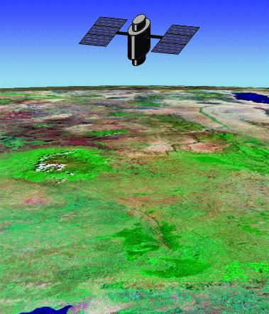
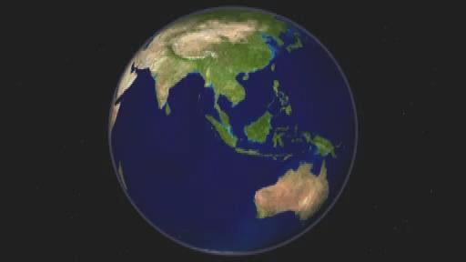

Remote Sensing & GIS in Environmental Technology
Ground-based environmental sampling is spatially sparse and logistically expensive. Remote Sensing (RS) and Geographic Information Systems (GIS) provide synoptic, multi-temporal, and multi-spectral observation of the Earth's surface. From tracking deforestation in the Western Ghats to mapping Urban Heat Islands (UHI) and water turbidity, satellite remote sensing is the primary quantitative monitoring tool of modern environmental engineering.
Healthy vegetation displays a distinctive 'Red Edge': strong absorption in Blue & Red (chlorophyll pigments) and high reflectance in Near-Infrared (spongy mesophyll cellular scattering). Water absorbs strongly in NIR, while dry soil shows monotonic reflectance increase.
1. Spatial (pixel size, e.g. Sentinel-2: 10m, Landsat-8: 30m). 2. Spectral (band width & count). 3. Radiometric (bit depth, 12-bit / 16-bit). 4. Temporal (revisit cycle, Sentinel-2: 5 days).
Normalized Difference Vegetation Index ($NDVI = \frac{NIR - Red}{NIR + Red}$) normalizes illumination variations and correlates directly with photosynthetic biomass and leaf area index (LAI).
Electromagnetic Radiation & Spectral Signature Mathematics
Planck's law and Wien's Displacement Law govern electromagnetic emissions from environmental surfaces:
For the Sun ($T \approx 5800\,\text{K}$), $\lambda_{\max} \approx 0.5\,\mu\text{m}$ (visible green-blue). For Earth ($T \approx 288\,\text{K}$), $\lambda_{\max} \approx 9.7\,\mu\text{m}$ (thermal infrared).
The False Color Composite (FCC) standard places Near-Infrared (NIR) into the Red display channel, Red into Green, and Green into Blue. Healthy dense vegetation consequently appears bright crimson red in standard FCC imagery.
Scientific Diagrams & Structural Analysis
In-depth explanations of the isolated figures, flowcharts, and empirical curves from this lecture.
Remote Sensing Electromagnetic Interaction & Sensor Geometry

Spectral Reflectance Curves for Pure Environmental Endmembers

Key Remote Sensing Indices
NDVI ranges from $-1.0$ to $+1.0$. Water bodies yield negative values ($-0.5$ to $0$), bare soil yields $0.1$ to $0.2$, and dense healthy forest canopies reach $0.7$ to $0.9$.
| Band Name | Wavelength ($\mu m$) | Primary Environmental Application | Sensor Mapping (Landsat 8 / Sentinel-2) |
|---|---|---|---|
| Blue | 0.45 – 0.51 | Coastal water depth, bathymetry, smoke/haze mapping | Band 2 (L8) / Band 2 (S2) |
| Green | 0.53 – 0.59 | Vegetation vigor assessment, peak reflectance | Band 3 (L8) / Band 3 (S2) |
| Red | 0.64 – 0.67 | Chlorophyll absorption, plant stress detection | Band 4 (L8) / Band 4 (S2) |
| Near-Infrared (NIR) | 0.85 – 0.88 | Biomass volume, leaf canopy structure, water boundary demarcation | Band 5 (L8) / Band 8 (S2) |
| Shortwave IR (SWIR) | 1.57 – 1.65 | Soil moisture content, vegetation water stress, fire burn scars | Band 6 (L8) / Band 11 (S2) |
🛰️ Multispectral Remote Sensing & NDVI Vegetation Index Visualizer
Simulate spectral reflectance in Red and NIR bands, calculate NDVI, and determine land cover classification.
Active Recall Flashcards
Test yourself on essential definitions, reactions, and principles before flipping.
Exam Traps, Fallacies & Professor Emphasis Points
Common student misconceptions and subtle distinctions tested in Midsem and Endsem exams.
- ⚠️ Trap: Confusing Spatial Resolution with Temporal Resolution. High spatial resolution (e.g. 0.5m WorldView) often comes with poor temporal revisit (weeks), whereas MODIS offers daily revisit at coarse 250m-1km spatial resolution.
- ⚠️ Exam Trap: Thinking water has high NDVI. Water absorbs almost 100% of NIR radiation, making $\rho_{\text{NIR}} \approx 0$, which results in a distinctly negative NDVI.
Concept Check Quiz
Instant feedback on core conceptual and quantitative questions.
Complete Slide Reference Gallery
All 18 slides from the lecture presentations for instant reference and review.